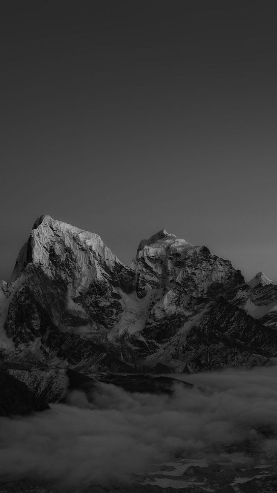
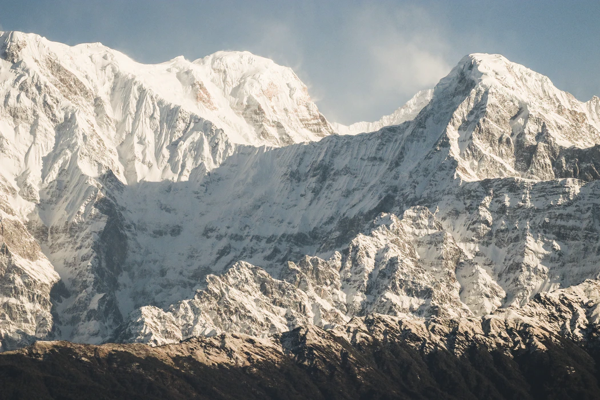
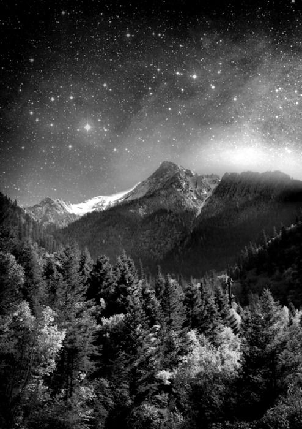
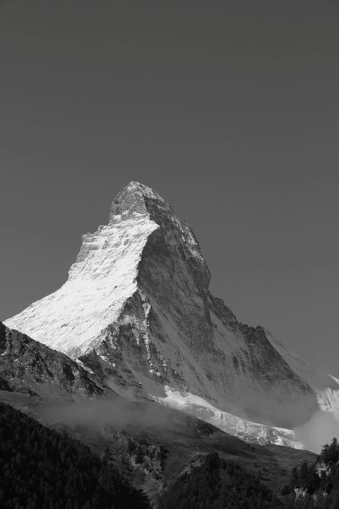
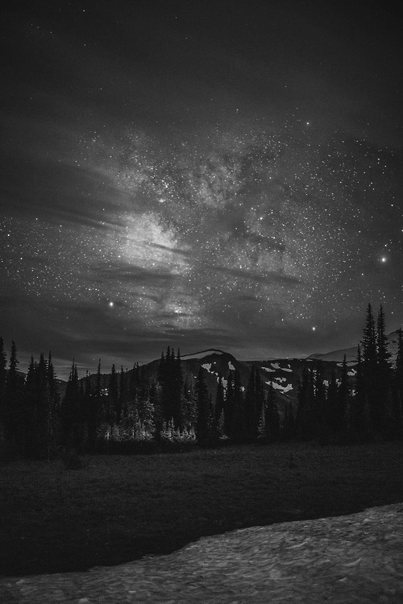
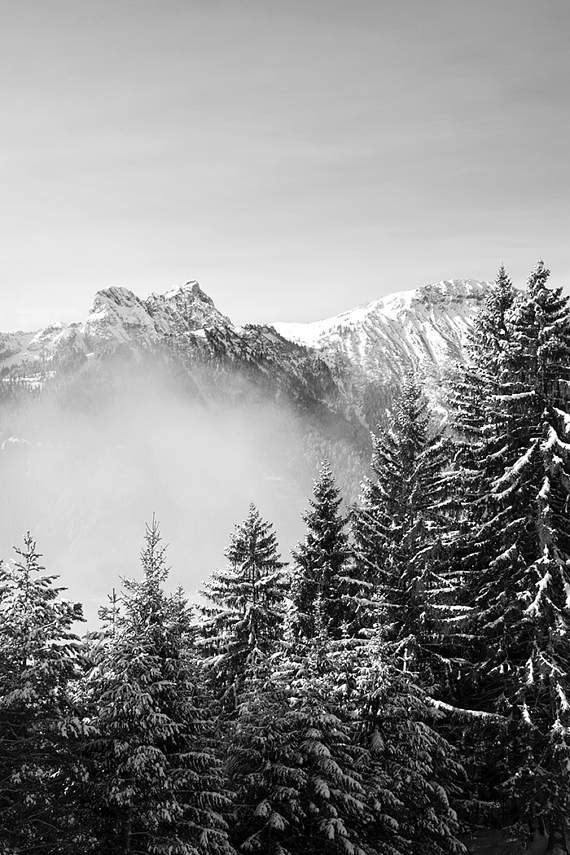

GjeravicaGjeravica is the second-highest mountain peak in the Albanian Alps. Gjreavica reaches an elevation of 2,656m above sea level.

HajleHajla is a mountain located between Kosovo and Montenegro. Hajla reaches an elevation of 2,403m above sea level.

KoritnikKoritnik is located in northeastern Albania and southwest Kosovo. Koritnik reaches an elevation of 2,393m above sea level.

LubotenLuboten is located on the broder between Kosovo and north Macedonia. Luboten reaches an elevation of 2,498m above sea level.

Mali i ZhlebitMali i Zhlebit is a large mountain in north-western Kosovo and eastern Montenegro. Mali i Zhlebit reaches an elevation of 2,382m above sea level.

PeskoviPeskovi is located between Kosovo and north Macedonia. Peskovi reaches an elevation of 2,651m above sea level.

Maja e KallabakutMaja e Kallabakut is located between Albania and Kosovo. Maja e Kallabakut reaches an elevation of 2,174m above sea level.

PashtrikPashtrik is a mountain located in Kosovo and Albania. Pashtrik reaches an elevation of 1,986m above sea level.